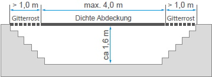

Häufig unterschätzt wird die Brand- und Explosionsgefahr in Werkstätten. Der Ottokraftstoff ist eine extrem entzündbare Flüssigkeit (Kategorie 1, H224) mit einem Flammpunkt von unter 23 °C. Er verdampft deshalb bei normalen Werkstatt-Temperaturen sehr schnell.
Schon bei ca. einem Volumenprozent Benzindampf in der Luft ist ein explosionsfähiges Gemisch erreicht.
Ottokraftstoffe sind nach EU-Gefahrstoffrecht als extrem entzündbar eingestuft. Die Anforderungen beim Umgang mit ihnen und bei der Verwendung sind in der Gefahrstoffverordnung und deren Technischen Regeln enthalten.
Dieselkraftstoffe haben einen Flammpunkt von über 55 °C und sind als entzündbar eingestuft. Die bewusste Beimischung von Ottokraftstoff zum Diesel in den Wintermonaten (Winterdiesel), wie sie vor vielen Jahren üblich war, ist heute nicht mehr nötig. "Winterdiesel" enthält heute Fließverbesserer, die den Flammpunkt nicht weiter absenken.
Insbesondere bei Arbeiten am Kraftstoffsystem kommt es zu ungewolltem Austreten von Ottokraftstoff. Hier ist besonders auf die Vermeidung von Zündquellen zu achten. Leicht werden Handleuchten, unabhängig von der Spannung, zur Zündquelle, wenn sie ohne Überglas und Schutzkorb verwendet werden und die Glühlampe, z. B. durch Anstoßen oder Berührung der heißen Oberfläche mit Flüssigkeiten, zerplatzt.
Die Gase brennbarer Flüssigkeiten sind durchweg schwerer als Luft und sammeln sich an den tiefsten Stellen der Werkstätten – den Arbeitsgruben und Unterfluranlagen. Ein Brand in diesen Anlagen ist besonders gefährlich, weil die Fluchtmöglichkeiten erschwert sind.
Untersuchungen der in den letzten Jahren vorgefallenen Brände in Arbeitsgruben und Unterfluranlagen zeigen, dass in den meisten Fällen ausgelaufener Ottokraftstoff aus Fahrzeugen in die Grube gelangt war, z. B.
Es kann nicht häufig genug wiederholt werden, dass bereits 30 cm3 oder ein Schnapsglas voll Ottokraftstoff in der Lage sind, eine Arbeitsgrube von 5 m Länge mit einer Tiefe von 1,5 m vollständig mit einem explosionsfähigen Benzindampf-Luftgemisch zu füllen.
Besonders kritisch wird es, wenn in den Arbeitsgruben und Unterfluranlagen eine zusätzliche Vertiefung angebracht wird, in der sich Altöl ansammeln kann. Meist wird diese Vertiefung durch ein Gitterrost abgedeckt, um den Beschäftigten einen sicheren Stand zu ermöglichen. Im Fall eines Brands ist mindestens mit hohem Sachschaden zu rechnen, bei Personenschäden häufig mit sehr schweren, auch tödlichen, Verbrennungen.
In der DGUV Regel 109-009 "Fahrzeuginstandhaltung" ist daher festgelegt, dass Arbeiten am Kraftstoffsystem von Ottomotoren nicht über Arbeitsgruben und Unterfluranlagen durchgeführt werden dürfen, es sei denn, es sind keine Hebebühnen oder Einrichtungen, die das Arbeiten über Flurebene ermöglichen, vorhanden!
Während der Arbeiten müssen zusätzliche Schutzmaßnahmen, wie z. B. eine technische Lüftung (Explosionsschutz beachten), wirksam sein.
Es ist fast unbekannt, dass Ottokraftstoff und Dieselkraftstoff nur eine geringe elektrische Leitfähigkeit besitzen. Das führt dazu, dass sich die Kraftstoffe beim Fließen aufladen und ihre elektrische Ladung nur langsam abgeben. Die elektrische Ladung darf nicht so groß werden, dass es zu einer Funkenentladung kommt, die ein explosives Kraftstoffdampf-Luftgemisch entzünden könnte. Daher muss durch Erdung für eine Abführung der Ladung gesorgt werden.
Zündfähige Funkenentladungen sind immer dann zu erwarten, wenn ein Kraftstofftank über einer Grube entleert und der Kraftstoff in einem am Grubenboden aufgestellten Behälter aufgesammelt wird.
Folgender schwerer Brand, der ohne Personenschaden ablief, soll dies näher erläutern:
In einer Werkstatt sollte ein Fahrzeugtank über einer Grube entleert werden. Hierzu löste der Kraftfahrzeugschlosser die Ablassschraube des Tanks und fing den Ottokraftstoff in einem Behälter am Boden der Grube auf. Der auslaufende Strahl wurde jedoch bald klein, da der Kraftfahrzeugschlosser vergessen hatte, den Tankverschluss zu öffnen. Er stieg aus der Grube und öffnete den Tankverschluss, der Kraftstoff konnte nun in vollem Strahl auslaufen.
Nach Aussagen des Kraftfahrzeugschlossers entzündete sich plötzlich der auslaufende Kraftstoff. Es kam noch hinzu, dass sich in der Grube eine offene Altölrinne befand, die mit Gitterrosten abgedeckt war. Diese Rinne war etwa 20 m lang, 0,8 m breit und 0,04 m tief. Nach der Zündung brannten in der vollen Länge der Rinne etwa 600 Liter Altöl.
Die 20 m lange Flammenfront griff auf das Holzdach über, lief über dem Dach entlang und erfasste auch die Büroräume. Es kam zu einem Brand, der zur völligen Vernichtung der Werkstatt führte. Das alles geschah so schnell, dass kein Inventar, nicht einmal wichtige Geschäftsunterlagen und auch keine Pkws und Lkws gerettet werden konnten. Das einzig Positive an diesem Brand: Es war kein Personenschaden zu beklagen.
Aus diesem Brandgeschehen müssen Folgerungen gezogen werden:
Um Brand- und Explosionsgefahren in Arbeitsgruben und Unterfluranlagen zu vermeiden, müssen leicht entzündbare Gase und Dämpfe durch Lüftung so verdünnt werden, dass sie nicht mehr explosionsfähig sind, das heißt, dass die Konzentration unterhalb der unteren Explosionsgrenze (UEG) liegt.
Das kann durch einen ausreichenden natürlichen Luftwechsel geschehen oder, wenn dieser nicht vorhanden ist, durch eine technische Lüftung.
Eine natürliche Lüftung ist ausreichend:

Abb. 5-1 Natürliche Lüftung einer abgedeckten Arbeitsgrube in Bauwerken
Technische Lüftungen müssen beim Auftreten entzündbarer Gase und Dämpfe (Kategorie 1 und 2, CLP Verordnung) in gefährlichen Mengen einen dreifachen Luftwechsel je Stunde sicherstellen.
Wesentlich höhere Anforderungen sind an die Lüftung von Arbeitsgruben und Unterfluranlagen zu stellen, wenn mit dem Auftreten gesundheitsschädlicher Gase und Dämpfe in gefährlichen Mengen, z. B. mit Motorabgasen, zu rechnen ist.
Dann ist ein stündlicher Luftwechsel mit mindestens dem Sechsfachen des Rauminhalts der betreffenden Arbeitsgrube oder Unterfluranlage, das heißt ein vollständiger Luftaustausch alle 10 Minuten, erforderlich. Das ist nur mit einer technischen Lüftung zu erreichen.
Allerdings ist mit dem Auftreten gesundheitsschädlicher Gase und Dämpfe nur bei häufigem Fahrzeugwechsel über der Arbeitsgrube und Unterfluranlage zu rechnen, z. B. bei einem durchlaufenden Betrieb mit mehr als fünf Fahrzeugen pro Stunde.
Der geforderte sechsfache Luftwechsel pro Stunde stellt eine Untergrenze für die Lüftung dar. Daher müssen in der Regel Lüfter und Leitungen für einen höheren Luftwechsel ausgelegt sein. Die Luftgeschwindigkeit soll die Behaglichkeitsgrenze in Abhängigkeit von der Lufttemperatur nicht überschreiten, damit keine unzumutbaren Zugerscheinungen für die in der Grube oder Unterfluranlage arbeitenden Personen entstehen.
Die technische Lüftung soll die gefährlichen Gase und Dämpfe am Boden der Arbeitsgrube oder Unterfluranlage absaugen:
Es wäre falsch, die aus den Arbeitsgruben und Unterfluranlagen abgesaugte Luft mit anderen Abgasen von Verbrennungsmotoren und Feuerungsanlagen oder mit Abluft anderer Lüftungsanlagen gemeinsam in einer Leitung ins Freie zu führen. In einem solchen Fall kann durch Versagen der Lüftungseinrichtungen ein lüftungstechnischer Kurzschluss entstehen, der die Abgase wieder in die Grube hineinleitet.
Alle Lüftungsanlagen können jedoch ihren Zweck nicht erfüllen, wenn sie nicht vor Betreten der Arbeitsgruben und Unterfluranlagen in Gang gesetzt werden. Ebenso müssen sie vor Beginn von Feuer-, Schweiß- und Schleifarbeiten über oder in der Nähe von Arbeitsgruben und Unterfluranlagen eingeschaltet werden, auch dann, wenn Gruben und Unterfluranlagen abgedeckt sind.
Besonders durch Schmutzablagerungen, aber auch durch Verschleiß, wird die Funktionsfähigkeit von Lüftungsanlagen in jahrelangem Betrieb eingeschränkt. Deshalb müssen alle Anlagen vor der ersten Inbetriebnahme und danach mindestens alle zwei Jahre geprüft werden. Diese Prüfung beinhaltet in der Regel auch eine Funktionsprüfung.
Ausgelaufene oder verschüttete entzündbare Kraftstoffe müssen unverzüglich aufgenommen, aus den Arbeitsräumen entfernt und bis zur endgültigen Entsorgung an geeigneter Stelle gesammelt werden. Die betroffenen Räume müssen gründlich gelüftet werden. Geschieht das nicht, ist immer damit zu rechnen, dass durch die in einer Werkstatt unvermeidbaren Zündquellen die in großen Mengen entstehenden explosionsfähigen Dampf-Luftgemische gezündet werden.
Zündquellen in einer Werkstatt bestehen z. B. bei:
und z. B. an:
Öl und Fettbestandteile sind in gebrauchtem Putzmaterial auf eine große Oberfläche verteilt. Unter bestimmten Voraussetzungen (Temperatur, Druck) können sie sich selbst entzünden.
Die Aufbewahrung und Wiederverwendung gebrauchten Putzmaterials fällt in den Geltungsbereich des Gesetzes zur Förderung der Kreislaufwirtschaft und Sicherung der umweltverträglichen Beseitigung von Abfällen. Die Aufbewahrung gebrauchten Putzmaterials erfolgt in nicht brennbaren geschlossenen Behältnissen.
Putzmaterialien sind ein großer Kostenfaktor, wenn sie nach Gebrauch entsorgt werden. Heute ist deshalb die Verwendung von Putzmaterial üblich, das nach Gebrauch gereinigt und wiederverwendet wird.
Bei Benzinmotoren mit Einspritzung verbleibt nach dem Abstellen des Motors Druck im Einspritzsystem. Beim Öffnen des Systems baut sich dieser Druck durch austretenden Kraftstoff ab. Dieser wird von in der Werkstatt Beschäftigten in der Regel durch Putzlappen aufgefangen, die anschließend in einen Sammelbehälter verbracht werden. Innerhalb dieses Behälters besteht dann das Risiko der Entstehung einer explosionsfähigen Atmosphäre.
Diesem Risiko sollte dadurch begegnet werden, dass z. B. Sammelbehälter für Abfall und Putzmaterialien außerhalb einer Werkstatt im Freien aufgestellt werden. Leider scheitert das häufig an den damit verbundenen langen Wegen. Eine gute Möglichkeit, auch innerhalb einer Werkstatt einen weitgehenden Schutz zu realisieren, bietet die Verwendung eines brand- und explosionsschutztechnisch geprüften Schutzbehälters.
Bei unsachgemäßer Sammlung von Altöl bestehen Unfall- und Umweltgefahren. Daher muss Altöl bis zur sachgerechten Entsorgung entsprechend der vorgesehenen Verwendung getrennt gesammelt werden, und zwar als Altöle:
Altöle, die aufgearbeitet werden können, werden zu Sonderabfall, wenn sie z. B. mit folgenden Stoffen gemischt werden:
Die Entsorgung von Sonderabfall ist teuer und schwierig; die getrennte Sammlung lohnt sich daher.
Über den Verbleib des Altöls ist Nachweis zu führen. Das schreibt das Gesetz zur Förderung der Kreislaufwirtschaft und Sicherung der umweltverträglichen Beseitigung von Abfällen ausdrücklich vor.
Ist sichergestellt, dass nur Altöle bekannter Herkunft (z. B. unmittelbar aus dem Motor) gelagert, abgefüllt oder befördert werden, gelten die Vorschriften für Anlagen für brennbare Flüssigkeiten mit einem Flammpunkt > 55 °C und ≤ 370 °C.
Bei diversen Instandsetzungsarbeiten fallen geringe Mengen Ottokraftstoff an – z. B. bei Benzinfilterwechsel, Fördermengenprüfung, Vergaserarbeiten usw. – die gesondert gesammelt und entsorgt werden müssen.
Mehrere schwere Explosionsunfälle von Altölsammelbehältern haben gezeigt, dass der Einfachheit halber und wegen Fehlens geeigneter Sammelbehälter diese "Kleinmengen" mit in die Altölsammelbehälter gefüllt werden. Nur allzu schnell wird dann aus einem Stoff mit einem Flammpunkt von über 55 °C ein extrem entzündbarer Stoff mit einem Flammpunkt von unter 23 °C.
Anlagen zur Lagerung, Abfüllung oder Beförderung von Altölen unbekannter Herkunft müssen nach den Vorschriften für Anlagen für brennbare Flüssigkeiten mit einem Flammpunkt < 55 °C (TRGS 509) errichtet und betrieben werden. Ein offener Lagerbehälter ist z. B. nicht zulässig.
Deshalb grundsätzlich Ottokraftstoffe getrennt sammeln und, wenn sie nicht wiederverwendet werden können, getrennt entsorgen.
Die überwiegende Menge der Fahrzeuge wird von Verbrennungsmotoren angetrieben. An diesen Fahrzeugen sind Arbeiten mit Zündgefahren nur dann erlaubt, wenn sichergestellt ist, dass sich
nicht entzünden können.
Die Entzündungsgefahr der Kraftstoffdämpfe oder Gase kann beseitigt werden, z. B. durch:
Falls der Kraftstoffbehälter ausgebaut werden muss, ist der Kraftstoff vorher mit einem Saugheber oder Tankentleerungsgerät aus dem Behälter zu entfernen, wenn nicht für das Entleeren besondere Ablassleitungen mit Absperr- ventil vorhanden sind.
Wie schon erwähnt, ist das Entleeren des Kraftstoffbehälters durch freies Ablassen nicht zulässig.
Bei Arbeiten mit Zündgefahren an Fahrzeugen mit Flüssiggasbetrieb ist eine weitere Sicherheitsanforderung zu erfüllen:
Die Treibgasflaschen müssen gegen zu große Drucksteigerung durch Wärmeentwicklung geschützt werden. Ebenso sollte nicht vergessen werden, die Hauptabsperrventile zu schließen, damit kein Treibgas austritt.
Der in der Kraftstoffanlage befindliche Restdruck von bis zu mehreren bar und die bis zu 0,5 l Ottokraftstoff fassenden Filter von Einspritzanlagen ließen bisher einen "trockenen" Ausbau nicht zu. Es kam regelmäßig zum Benetzen der Hände, der Arme und der Kleidung der Beschäftigten in der Werkstatt und damit auch zum direkten Hautkontakt mit dem krebserzeugenden Benzol.
Nach längerer Entwicklungszeit werden auf dem Markt Geräte angeboten, mit denen ein völlig trockener Kraftstoff-Filterwechsel ermöglicht wird.
In §§ 7 und 11 der Gefahrstoffverordnung ist festgelegt, dass Verwendungsverfahren, soweit es zumutbar und nach dem Stand der Technik möglich ist, geändert werden müssen, wenn dadurch das Auftreten eines krebserzeugenden Gefahrstoffs verhindert werden kann. Durch die oben erwähnten Geräte ist der gefahrlose Filterwechsel zum Stand der Technik geworden.
Die Werkzeuganwendung wird als zumutbar angesehen, sodass sich aus der Gefahrstoffverordnung die Verpflichtung ergibt, derartige Werkzeuge zu benutzen. Darüber hinaus regelt die DGUV Regel 109-009 "Fahrzeuginstandhaltung" die Verwendung derartiger Werkzeuge.
Arbeiten mit Zündgefahren an Behälterfahrzeugen für den Transport von Flüssigkeiten der Kategorie 1 (H224; Flüssigkeit und Dampf extrem entzündbar), der Kategorie 2 (H225; Flüssigkeit und Dampf leicht entzündbar) und der Kategorie 3 (H226; Flüssigkeit und Dampf entzündbar) dürfen nur unter besonderen Schutzmaßnahmen zur Verhütung von Bränden und Explosionen vorgenommen werden. Hinweis: Entzündbare Flüssigkeiten mit einem Flammpunkt zwischen 55 °C und 75 °C (z. B. Gasöle, Diesel und leichte Heizöle) können im Sinne der CLP-Verordnung EG Nr. 1272/2008 der Kategorie 3 zugeordnet werden.
Wenn die Behälter von Tankwagen nicht mit Wasser, inerten Gasen (z. B. Stickstoff, Kohlendioxid) oder Wasserdampf gefüllt werden können, muss vor der Durchführung der Arbeiten mit Zündgefahren ein Gasfreiheitsattest einer befähigten Person vorliegen.
Betreffen die Arbeiten mit Zündgefahren nicht den Behälter, den Armaturenschrank oder die Leitungen selbst, sind mindestens folgende Maßnahmen zu treffen:
Beim Laden der Batterien entstehen bei zu hoher Ladespannung und beim Überladen der Batterien größere Mengen Wasserstoff an einem Pol und Sauerstoff am anderen Pol.
Beide Gase bilden das hochexplosive Knallgas. Um das Entstehen explosionsfähiger Gemische zu verhindern, müssen die Ladestationen und Laderäume für Akkumulatoren stets ausreichend belüftet werden.
Die zugeführte Frischluft soll in Bodennähe in den Laderaum eintreten. Die Abluft soll möglichst hoch über der Ladestelle an einer gegenüberliegenden Stelle des Raumes ins Freie entweichen, sodass eine wirksame Querlüftung entsteht.
In einem großen Werkstattraum ist das Aufladen einer einzelnen Starterbatterie für ein Fahrzeug mit Verbrennungsmotor sicherlich nicht gefährlich. Das ist anders, wenn z. B. Batterien für Flurförderzeuge geladen werden müssen. Dann muss der Laderaum besonders wirkungsvoll gelüftet werden.
Planungshilfen zur Belüftung und zum Explosionsschutz werden auf den Internetseiten der BGHM und DGUV angeboten.
Beim
entstehen zündfähige Funken, die das Knallgas entzünden können, wenn nicht entsprechend sichere Geräte verwendet werden.
Sichere Geräte sind solche, die einen Ein-/Ausschalter besitzen, der ein funkenfreies Ansetzen ermöglicht.
Erst nach dem Ansetzen bzw. Anklemmen wird durch Schalterbetätigung der Stromkreis geschlossen.
Bei Batterieladegeräten muss der Schalter in der Minusstellung des Ladestromkreises angeordnet sein.
Vor dem Abklemmen muss der Stromkreis durch den Schalter wieder geöffnet werden. Damit wird auch sichergestellt, dass das Gerät für den nächsten Einsatz betriebsbereit ist.
Viel Werbung wird mit so genannten wartungsfreien Batterien gemacht. Diese Aussage der Batteriehersteller ist nur bedingt richtig: durch einen stark abgesunkenen Säurestand sind die Platten nicht mehr mit Flüssigkeit bedeckt, können korrodieren und der Gasraum wird gleichzeitig vergrößert, sodass das Volumen des zündfähigen Wasserstoff-Sauerstoff-Gemisches vergrößert wird.
Durch das Entladen einer Batterie verringert sich die Säuredichte; das heißt, je tiefer eine Batterie entladen ist, desto dünner wird die Säure. Dadurch wird der Gefrierpunkt heraufgesetzt. Insofern reichen bereits wenige Minusgrade aus, die Elektrolyte einfrieren zu lassen, sodass eine Batterie zum Starten eines Fahrzeugmotors nicht mehr genügend Energie liefern kann.
Häufig wird dann zum Starten mithilfe eines Überbrückungskabels eine "Spenderbatterie" eingesetzt. Unbedingt müssen dabei Zündfunken vermieden werden, um eine Zündung des im Gasraum der Batterie befindlichen Wasserstoffs und damit einen Batterie-Zerknall zu vermeiden.
Folgende Punkte müssen beachtet werden:
Durch starke Gasung bei extremen Einsatzbedingungen (z. B. hohe Stromentnahme, Hitze usw.), einen externen Funken aus dem Werkstattbereich oder einen internen Funken durch Kurzschluss kann es zum Batterie-Zerknall mit hohem Verletzungsrisiko kommen.
Es ist daher wichtig, auch bei so genannten wartungsfreien Batterien mindestens jährlich den Elektrolytstand zu kontrollieren und bei Bedarf destilliertes Wasser nachzufüllen.
Zum Schutz der Augen vor Verätzungen sollte bei jedem Umgang mit Batterien eine Schutzbrille oder besser ein Gesichtsschutzschild getragen werden.
Säuren und Laugen für Akkumulatoren können die Beschäftigten verätzen.
Bei Arbeiten mit Säuren und Laugen müssen daher geeignete persönliche Schutzausrüstungen, wie:
getragen und Vorrichtungen benutzt werden, die das Verspritzen und Verschütten der Säuren und Laugen verhindern, z. B. Säureheber, Ballonkipper. Diese Vorrichtungen sind vom Unternehmer oder von der Unternehmerin bereitzustellen und von den Beschäftigten zu benutzen.
Die Behälter für die Säuren und Laugen müssen bruchsicher oder vor Bruch geschützt und entsprechend der Gefahrstoffverordnung gekennzeichnet sein.
Die Aufbewahrung von Säuren und Laugen in Trinkgefäßen ist eine tödliche Gefahr und verboten.
Ein grundsätzliches Rauchverbot in Werkstätten für die Fahrzeuginstandhaltung besteht nicht. Es ist aber schwierig für Raucher, stets einen ausreichenden Abstand zu Bereichen einzuhalten, in denen entzündbare Gase oder Dämpfe vorhanden sind oder sich bilden können.
Das Rauchen ist insbesondere nicht zulässig in Arbeitsbereichen, in denen
Dies trifft z. B. bei Arbeiten am Kraftstoffsystem, bei der Verwendung von Lösemitteln zum Säubern von Bremsen und beim Spritzlackieren zu.
Diese Arbeitsbereiche sind durch Anschlag des Rauchverbots (Verbotszeichen P02 nach DIN EN ISO 7010: 2017-10 und DGUV Information 211-041 "Sicherheits- und Gesundheitsschutzkennzeichnung") zu kennzeichnen. Die Anschläge müssen so angebracht sein, dass Personen auch schon vor Betreten der Arbeitsbereiche auf das Rauchverbot hingewiesen werden.
Für die Brandbekämpfung müssen geeignete Feuerlöscher in ausreichender Anzahl an leicht erreichbarer Stelle bereitgestellt sein. Für die Grundausstattung werden im Regelfall nur Feuerlöscher angerechnet, die jeweils über
mindestens 6 Löschmitteleinheiten
(LE) verfügen. Werden im Rahmen einer Gefährdungsbeurteilung Bereiche mit erhöhter Brandgefährdung festgestellt, sind zusätzliche Maßnahmen festzulegen, um Entstehungsbrände schneller erkennen und bekämpfen zu können. Eine Maßnahme neben dem Ausrüsten von Bereichen mit Brandmeldeanlagen ist z. B. die Erhöhung der Anzahl der geeigneten Feuerlöscher.Hinweis:
Laut Beispielsammlung der ASR A2.2 "Maßnahmen gegen Brände" sind Kfz-Werkstätten Bereiche mit erhöhter Brandgefährdung. Folglich ist eine Gefährdungsbeurteilung erforderlich, aus der sich die weiteren Maßnahmen zur Grundausstattung ergeben, wie die Erhöhung der Anzahl der Feuerlöscher, die Ausbildung von Brandschutzhelferinnen und-helfern und gegebenenfalls die Bestellung von Brandschutzbeauftragten.
Die erforderliche Anzahl der geeigneten Feuerlöscher in der Grundausstattung richtet sich nach Brandgefährdung, Grundfläche und dem Löschvermögen eines Feuerlöschers. Für die Berechnung der bereitzustellenden Anzahl von Feuerlöschern ist entsprechend der Technischen Regel für Arbeitsstätten ASR A2.2 "Maßnahmen gegen Brände" das Löschvermögen maßgeblich. Da das Löschvermögen nicht additionsfähig ist, wurde die Hilfsgröße "Löschmitteleinheit" (LE) eingeführt (siehe Abbildung 5-3).
Die Zuordnung des Löschvermögens eines Feuerlöschers zu den Löschmitteleinheiten ist in der Übersicht der Tabelle dargestellt (siehe Abbildung 5-2).
Abb. 5-2 Zuordnung des Löschvermögens zu Löschmitteleinheiten, Technische Regel für Arbeitsstätten ASR A2.2 "Maßnahmen gegen Brände".
Abb. 5-3 Löschmitteleinheiten in Abhängigkeit von der Grundfläche der Arbeitsstätte, Technische Regel für Arbeitsstätten ASR A2.2 "Maßnahmen gegen Brände".
glutbildende Stoffe |
flüssig wer- dende Stoffe |
Stoffe, auch unter Druck |
(Einsatz nur mit Pulverbrause) |
|
| Pulverlöscher mit ABC-Löschpulver | ||||
| Kohlendioxidlöscher | ||||
| Schaumlöscher | ||||
| + = geeignet - = nicht geeignet | ||||
Abb. 5-4 Eignung von Feuerlöschern für den jeweiligen Einsatzzweck (DIN EN 2:2005-01) + = geeignet - = nicht geeignet
Üblicherweise werden in Kfz-Werkstätten Pulverlöscher mit ABC-Löschpulver, Schaumlöscher sowie Kohlendioxidlöscher bereitgehalten. Die geeigneten Einsatzzwecke der Feuerlöscher unter Bezugnahme auf die Brandklasse zeigt die Abbildung 5-4.
Um sicherzugehen, dass die Feuerlöscher auch funktionsfähig sind, müssen sie mindestens alle zwei Jahre geprüft werden. Der Prüfungsvermerk ist am Feuerlöscher anzubringen. Feuerlöscher müssen immer leicht zugänglich sein.
Eine ausreichende Anzahl von Personen muss mit der Handhabung und dem Umgang der Feuerlöscheinrichtung vertraut gemacht werden. Für den Brandfall ist ein Alarmplan aufzustellen.
Zum Ablöschen brennender Kleidung müssen geeignete Feuerlöscheinrichtungen verwendet werden. Es sollte ein Feuerlöscher verwendet werden, da er in allen Fällen eine sichere und schnelle Brandbekämpfung ohne zusätzliche Verletzungsgefahren für die zu rettende Person gewährleistet. Folgende Hinweise zur Personenbrandbekämpfung mit einem Feuerlöscher müssen beachtet werden:
Weitere Informationen zu diesem Thema können der
entnommen werden.
Durch den Austritt von Kraftstoff ist die Gefahr einer Zündung und damit eines Brands besonders groß. Deshalb sind für diese Arbeitsplätze und Tätigkeiten entsprechende Gefährdungsbeurteilungen erforderlich und mindestens in unmittelbarer Nähe derartiger Arbeitsplätze und Tätigkeiten geeignete Feuerlöscheinrichtungen bereitzustellen.
Abb. 5-5 Vorgehensweise beim Löschen von Personenbränden mit einem Handfeuerlöscher